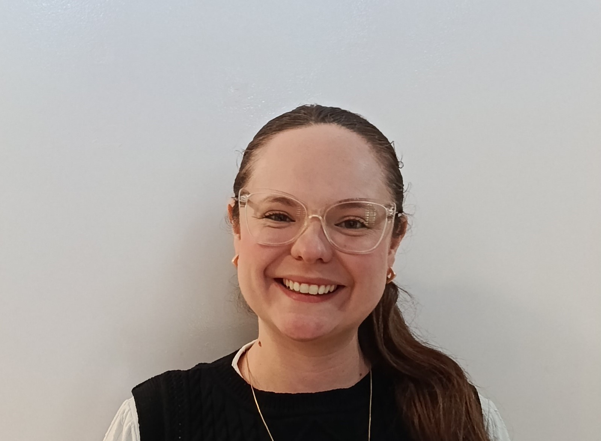

Professoras
Conheça as histórias das mulheres professoras.

Thalita
Minha trajetória
Thalita Cardoso é professora de Matemática e trabalha há três anos na rede SESI, sendo oito meses na unidade atual, para onde veio por transferência. Sua história com o SESI começou ainda na infância, pois estudou na instituição desde o primeiro ano. Durante sua trajetória, enfrentou dificuldades financeiras e precisou começar a trabalhar mais cedo para conquistar seus objetivos. Ela conta que trabalhou para pagar um cursinho popular, estudou durante um ano e conseguiu entrar na Universidade de São Paulo (USP), onde se formou em Ciências Exatas, com habilitação em Matemática. Além disso, foi coordenadora voluntária de um cursinho popular, ajudando estudantes que não tinham condições financeiras de pagar por uma preparação para a faculdade. Sua trajetória foi construída com muito esforço, dedicação e vontade de realizar seus sonhos. Ao falar sobre seu trabalho, Thalita destaca que gosta de ensinar e, principalmente, de acompanhar o momento em que os alunos compreendem um conteúdo que antes parecia difícil. Ela conta que gosta de ver a reação dos estudantes quando percebem que conseguem resolver uma questão e dizem: "Nossa, é só isso?". Para ela, trabalhar com educação é a realização de um sonho, pois sempre quis ser professora. Também sente orgulho de todos os momentos de sua trajetória, mas considera sua entrada na rede SESI uma conquista especialmente importante, por representar a concretização de um objetivo que desejava alcançar. Tassiana explica que o trabalho de uma professora vai muito além de chegar à sala de aula e explicar o conteúdo. Por trás das aulas, existe um grande esforço de planejamento e preparação, que muitas vezes não é percebido pelas pessoas. Ela conta que dedica finais de semana e noites à organização das atividades, pensando em como os alunos vão compreender os assuntos e quais dúvidas poderão surgir. Mesmo tendo uma carga horária na escola, muitas vezes continua trabalhando em casa, dedicando horas extras para preparar suas aulas e buscar maneiras de ensinar melhor. Entre os desafios de sua trajetória, Thalita destaca as dificuldades de ser mulher na área de Ciências Exatas. Durante sua formação na USP, enfrentou situações em um ambiente que descreve como machista, relatando que alguns professores e orientadores a diminuíam por ser mulher e que recebia um tratamento diferente de outros alunos. Apesar dessas experiências, continuou sua trajetória e conquistou seu espaço como professora de Matemática. Ela considera que atuar nessa área como mulher é desafiador, mas também reconfortante, pois acredita que sua presença pode abrir espaço para que outras meninas reconheçam que também podem seguir esse caminho. Em sua atuação na escola, Thalita deseja que seu trabalho ajude os alunos a compreenderem não apenas a Matemática, mas também aspectos importantes da vida. Ela acredita que a disciplina permite desenvolver o raciocínio lógico e o pensamento crítico, contribuindo para a formação de pessoas capazes de refletir e construir suas próprias opiniões. Por isso, espera que seus alunos se tornem pessoas críticas e que consigam utilizar os conhecimentos adquiridos para enfrentar situações dentro e fora da escola. Ao falar sobre as mulheres que a inspiraram, Thalita destaca duas professoras que marcaram sua vida: dona Sarita e dona Dinorá, suas professoras de Artes e Matemática. Suas experiências com a educação e com essas profissionais fizeram parte de sua trajetória e de sua relação com o conhecimento. Para os jovens que estão começando a construir seus caminhos, ela deixa uma mensagem de incentivo para que não desistam de seus objetivos, mas também não tenham medo de recomeçar caso percebam que desejam seguir outra direção. Sua história mostra como a persistência, a educação e a valorização das mulheres nas áreas em que ainda enfrentam desafios podem contribuir para transformar trajetórias e abrir novas possibilidades.
.jpg)
Edna
Minha trajetória
Edna Cristina Lira Matos Gomes é professora de Educação Básica e atua com turmas do 6º ano do Ensino Fundamental até o 3º ano do Ensino Médio. Está há quatro anos na área da educação e há nove meses na instituição. Sua trajetória profissional, porém, começou muito antes de chegar à sala de aula: aos 14 anos, por indicação de uma professora, conseguiu seu primeiro emprego em um escritório de advocacia, onde trabalhou por dois anos. Depois, iniciou a Faculdade de Direito e conseguiu um estágio na área jurídica de um banco, onde permaneceu por 12 anos. Mesmo tendo estabilidade profissional, Edna sentia que faltava algo em sua vida. Decidiu então empreender com uma colega, e dessa parceria nasceu um café, que funcionou por dois anos. Após o fim da sociedade, voltou a trabalhar no mercado financeiro, mas, com o passar do tempo, percebeu que desejava seguir outro caminho e realizar seu sonho de trabalhar com educação. A mudança de carreira aconteceu em um momento importante de sua vida. Quando sua filha, Manu, tinha cerca de três anos, Edna precisou reorganizar sua rotina por causa das necessidades da família e da dificuldade de conciliar o trabalho em São Paulo com a vida em Itatiba. Nesse período, decidiu dedicar um tempo à maternidade e começou a estudar Geografia, área pela qual se apaixonou. Mais tarde, concretizou sua transição para a educação, mesmo diante das dúvidas e dos questionamentos de familiares. Para ela, mudar de caminho nunca é tarde, desde que a pessoa tenha convicção do que deseja. O que Edna mais gosta em seu trabalho é estar com os alunos e construir o conhecimento junto com eles. Para ela, ensinar não significa apenas apresentar um conteúdo para que os estudantes o memorizem, mas desenvolver experiências que transformem a maneira como enxergam o mundo. Acredita que a educação precisa fazer sentido e contribuir para a formação de pessoas críticas, conscientes e capazes de usar o que aprenderam para fazer o bem. Edna também destaca que grande parte do trabalho de um professor acontece fora da sala de aula. O planejamento e a preparação exigem dedicação, pois cada turma e cada estudante têm suas próprias necessidades. Mesmo quando leciona para turmas da mesma série, ela procura adaptar suas aulas ao público que tem diante de si. É esse processo de preparar, ensinar e acompanhar o desenvolvimento dos alunos que dá sentido à sua profissão. Um dos maiores desafios de sua trajetória foi justamente a transição de carreira. Depois de tantos anos no mercado financeiro, deixar uma área em que já estava confortável e começar novamente gerou inseguranças, especialmente por ter tomado essa decisão já na casa dos 30 anos. Ainda assim, Edna acredita que todas as experiências foram importantes e que cada etapa abriu portas para a seguinte. Não mudaria o passado, pois entende que suas escolhas contribuíram para construir a vida, a família e o trabalho que tem hoje. Para Edna, ser mulher vai além de falar sobre empoderamento: significa ser cidadã e procurar transformar o mundo com aquilo que se tem. No caso dela, essa transformação acontece por meio da educação, incentivando os alunos a colocarem seus conhecimentos em prática para fazer o bem. Suas maiores inspirações são as mulheres de sua família. Sua avó, uma mulher baiana que veio da roça, representa força, firmeza e coragem; sua mãe inspira pela doçura e delicadeza; suas irmãs são seu amparo. Já suas alunas e sua filha representam as mulheres que a inspiram quando pensa no futuro. Ao aconselhar os jovens, Edna reforça a importância de cuidar de si mesmos para também poderem cuidar dos outros. Ela costuma se despedir de suas turmas dizendo: “Fiquem bem, se cuidem e até a próxima”. Para ela, essas palavras não são apenas uma despedida, mas um lembrete de que o conhecimento e o cuidado ganham significado quando são usados para ajudar as pessoas ao redor. Uma de suas mensagens para os estudantes resume a importância que ela dá à educação: “Estudem sempre. Nunca parem de estudar.”

Flavienne
Minha trajetória
Flavienne Marins Pereira Vaz é professora e atua na área da Educação, trabalhando com alunos do Ensino Fundamental 1, Fundamental 2 e Ensino Médio. Possui mais de 10 anos de experiência na área e tem formação em Química, especialização em Programação e Análise de Dados em Python e mestrado em Educação Tecnológica, embora não tenha concluído a apresentação final. Antes de seguir para a educação, Flaviane trabalhou na indústria, atuando em laboratório químico e também como técnica em Meio Ambiente, em Belo Horizonte. Depois, fez a transição para a área acadêmica e começou a lecionar. Trabalhou por mais de 15 anos em Belo Horizonte e, após se mudar para São Paulo e posteriormente para Jundiaí, retomou as aulas particulares e começou a participar de processos seletivos para voltar a trabalhar em escolas. Uma das coisas que mais gosta em sua profissão é perceber que conseguiu transmitir uma mensagem positiva aos alunos. Para ela, ensinar não significa apenas transmitir conhecimentos técnicos, mas também contribuir para a formação pessoal dos estudantes, incentivando valores como honestidade, justiça e respeito. Flaviane sente orgulho quando percebe que seus alunos realmente aprenderam aquilo que foi trabalhado em sala. Também se emociona ao acompanhar antigos estudantes que seguiram suas carreiras e hoje são médicos, advogados, engenheiros, arquitetos e outros profissionais. Ver o sucesso deles é uma de suas maiores satisfações. Um dos desafios marcantes de sua trajetória foi aprender a ter mais empatia. No início da carreira, ela reconhece que ainda era imatura e tinha dificuldade para se colocar no lugar de pessoas com histórias de vida diferentes. Com o passar dos anos e com as próprias experiências de vida, especialmente depois de ter filhos, desenvolveu uma visão mais cuidadosa e empática sobre as outras pessoas. Para Flaviane, trabalhar com educação significa unir o trabalho a uma boa ação. Ela considera gratificante receber para realizar uma atividade que pode transformar a vida de outra pessoa. Ela acredita que seu trabalho representa uma referência para os alunos, principalmente pela postura dentro da sala de aula e pela maneira de tratar as outras pessoas. Por isso, procura agir de forma correta, justa e empática. Entre suas conquistas profissionais, destaca-se sua busca constante por aperfeiçoamento e conhecimento. Mesmo não tendo concluído o mestrado, Flaviane valoriza tudo o que aprendeu durante sua formação e a possibilidade de aplicar esses conhecimentos no dia a dia. Uma das mulheres que a inspira é sua mãe, que ela descreve como uma pessoa muito educada e admirável. Também citou Leopoldina como uma figura histórica que considera inspiradora por sua atuação e pelas contribuições que associa à história do Brasil. Como mulher que já atuou tanto na educação quanto no setor industrial, Flaviane relata que teve experiências profissionais nas quais se sentiu respeitada. Embora reconheça que outras mulheres podem enfrentar dificuldades diferentes, sua própria trajetória foi marcada principalmente por boas experiências nesse aspecto. Na convivência com os alunos, ela gosta de conhecer as histórias que existem por trás de cada pessoa e acredita que trabalhar com jovens também a mantém próxima de novas perspectivas. A convivência com outros profissionais também é importante, pois cada pessoa possui uma história diferente e pode contribuir para ampliar sua visão. Para os jovens que estão começando sua carreira, Flaviane aconselha que aproveitem o tempo e invistam em conhecimento. Para ela, o tempo é algo que não pode ser recuperado. Além disso, incentiva os jovens a serem justos e honestos, pois acredita que agir dessa maneira ajuda a manter a consciência tranquila. Sua história representa transformação, aprendizado, conhecimento e dedicação à formação de outras pessoas. Flaviane mostra que uma trajetória profissional pode passar por diferentes áreas e experiências, e que cada etapa pode contribuir para a construção de quem somos.

Paloma
Minha trajetória
Paloma é professora de Português do Ensino Médio e atua na área da Educação. Trabalha no SESI há um ano, três meses e sete dias, mas sua relação com a instituição começou antes, quando ainda estava na faculdade e realizou estágios no SESI. Sua trajetória profissional começou em 2020, quando iniciou a faculdade. No ano seguinte, trabalhou como corretora de redação e também começou a substituir aulas. Durante os estágios obrigatórios da faculdade, voltou ao SESI e teve a oportunidade de aprender com uma professora que havia sido sua professora no Ensino Médio. Essa experiência contribuiu para sua formação e para sua decisão de seguir na área da educação. Depois de concluir a faculdade, foi chamada para assumir uma vaga no SESI, realizando o desejo de retornar à instituição onde havia estudado durante toda a sua vida. Para Paloma, essa é uma de suas principais conquistas profissionais. Ao longo de sua trajetória, enfrentou desafios como conciliar a faculdade e o trabalho durante a pandemia, lidar com a indisciplina, a desvalorização da profissão e as constantes mudanças na educação. Para ela, ser professora exige adaptação constante, pois os materiais, sistemas, demandas e formas de ensinar estão sempre mudando. Paloma gosta especialmente de dar aulas e da troca que acontece com os alunos. Para ela, ser professora vai muito além de transmitir conteúdos. É também ouvir, aconselhar, acolher e contribuir para a formação das pessoas. Ela considera a educação fundamental para formar cidadãos, desenvolver o senso crítico e ampliar a visão de mundo dos estudantes. Para Paloma, estudar Literatura, História, Matemática e outras áreas não significa apenas aprender conteúdos, mas compreender melhor a sociedade e o mundo em que vivemos. Uma das experiências que mais a marcou foi perceber a evolução dos alunos. Ela conta que, em uma turma do sexto ano, os estudantes tinham dificuldade com figuras de linguagem. Para ajudá-los, interrompeu o conteúdo, retomou o assunto desde o início, preparou atividades, jogos e exercícios. Depois, todos os alunos conseguiram alcançar bons resultados, e até hoje se lembram do que aprenderam. Também se sente realizada quando antigos alunos contam que conseguiram uma vaga na faculdade graças aos conhecimentos de redação que aprenderam com ela. Sua principal motivação são os alunos que se esforçam e valorizam o trabalho realizado em sala de aula. Paloma também se sente motivada por lembrar que, desde os 13 anos, desejava viver a experiência de ser professora. Ela destaca que uma parte importante de seu trabalho passa despercebida: os bastidores. Preparar aulas, corrigir atividades, elaborar avaliações, fazer relatórios, acompanhar alunos, participar de reuniões, realizar cursos e adaptar planejamentos são tarefas que acontecem além da sala de aula. Para ela, ser professor é muito mais do que simplesmente chegar à escola e dar uma aula. Como mulher no ambiente escolar, Paloma também enfrenta desafios relacionados à autoridade e ao respeito. Ela percebe que, em algumas situações, professoras podem enfrentar discursos machistas e ter sua autoridade questionada de maneira diferente dos professores homens. Apesar disso, acredita que a presença das mulheres na educação é importante para inspirar outras meninas e mostrar que elas podem construir suas próprias trajetórias. Paloma deixa aos estudantes o conselho de valorizarem os professores, a escola, as oportunidades e tudo o que podem aprender durante essa fase. Ela reforça que o período escolar passa rapidamente e que é importante aproveitar não apenas os conteúdos, mas também as experiências, as conversas e a convivência com as pessoas. Sua história representa dedicação, paixão pela educação, adaptação e compromisso com a formação dos estudantes. Paloma mostra que ser professora é contribuir para que os alunos não apenas aprendam conteúdos, mas também desenvolvam senso crítico, ampliem sua visão de mundo e estejam preparados para construir suas próprias histórias.

Raysa
Minha trajetória
Raísa é professora de Língua Portuguesa e trabalha há 11 anos na área da educação, atualmente com turmas do 6º e do 8º ano. Sua trajetória começou em São Paulo, onde se formou pela PUC e iniciou sua carreira em escolas, trabalhando principalmente com o Ensino Médio. Quando se mudou para a região de Valinhos e Vinhedo, teve a oportunidade de trabalhar com o Ensino Fundamental 2, passando a acompanhar alunos mais novos. Durante sua formação e trajetória profissional, uma de suas grandes influências foi sua própria professora de Português, que marcou sua escolha pela profissão. Ao falar sobre seu trabalho, Raísa destaca que o que mais gosta é o convívio com os alunos e a possibilidade de acompanhar a evolução das pessoas ao longo do tempo. Para ela, a educação é um processo que nem sempre pode ser percebido imediatamente, pois suas transformações acontecem aos poucos e exigem atenção diária. Ela explica que, por não ser algo palpável, muitas vezes as pessoas não conseguem perceber o quanto um aluno está evoluindo, sendo necessário observar seu desenvolvimento continuamente. Entre os desafios de sua trajetória, Raísa destaca a necessidade de se adaptar às diferentes formas de aprendizagem dos estudantes. Com o passar dos anos, passou a ter mais contato com alunos que apresentam questões específicas de aprendizagem, o que exige que ela continue estudando e se atualizando para compreender como cada um aprende. Ela considera esse um desafio interessante, pois faz parte do processo de crescimento e aperfeiçoamento de sua atuação como professora. Quando fala sobre suas conquistas profissionais, Raísa relembra a participação em congressos e as premiações que recebeu em algumas etapas desses eventos. Também considera muito gratificante acompanhar seus alunos participando de olimpíadas e conquistando medalhas. Para ela, essas experiências são especiais porque representam não apenas resultados, mas também o envolvimento e o desenvolvimento dos estudantes. Além disso, admira mulheres que revolucionaram suas épocas e influenciaram a sociedade, como Madonna e Hebe Camargo, cujas trajetórias considera inspiradoras. Ao deixar sua mensagem sobre a importância das mulheres, Raísa destaca a capacidade feminina de enfrentar diferentes situações e promover mudanças. Para ela, as mulheres têm uma grande facilidade de adaptação e não se conformam facilmente com as circunstâncias em que vivem, o que contribui para seu poder de transformação. Sua história evidencia a importância de uma educação que acompanha as mudanças dos alunos, valoriza diferentes formas de aprender e reconhece o desenvolvimento de cada pessoa ao longo de sua trajetória.

Milena
Minha trajetória
Milena Domingues é pedagoga e professora do 2º ano do SESI. Sua trajetória na instituição começou em 2018, quando atuou como estagiária. Após concluir o estágio, trabalhou em outras escolas e teve a oportunidade de retornar ao SESI, onde se sente acolhida e respeitada e pretende continuar por muitos anos. Em seu trabalho, Milena atua diretamente na educação e no desenvolvimento dos alunos, planejando aulas, acompanhando a aprendizagem, corrigindo avaliações e preparando atividades, muitas vezes também fora do horário escolar. Sua principal contribuição é ajudar na formação dos estudantes, buscando tornar a aprendizagem significativa e sendo um exemplo para eles. Entre os desafios de sua trajetória, destaca-se o trabalho com crianças com necessidades especiais, além de lidar com diferentes ritmos de aprendizagem e com a falta de motivação de alguns alunos. Ela também destaca que o trabalho do professor vai muito além da sala de aula, envolvendo planejamento, correções e preparação de atividades em casa. Uma de suas maiores conquistas é perceber o reconhecimento dos alunos. Para ela, ouvir que suas aulas são brilhantes e que vale a pena aprender com ela é algo emocionante e significativo. Outro momento marcante foi acompanhar um aluno com necessidades especiais aprendendo a ler e escrever, experiência que considera muito especial. Milena acredita que a educação transforma pessoas e que o professor possui um papel fundamental na sociedade, pois é por meio da educação que todas as outras profissões são formadas. Para os alunos, seu trabalho representa um exemplo de dedicação, cuidado e compromisso. Ela também defende que os professores precisam ser respeitados e valorizados. Sua história demonstra a importância das mulheres que atuam na educação e contribuem diariamente para a construção da comunidade escolar. Por sua dedicação, pelos desafios enfrentados e pelo impacto que causa na vida dos estudantes, Milena merece reconhecimento e valorização pelo trabalho que realiza dentro e fora da escola.
.jpg)
Isadora
Minha trajetória
Isadora é professora de inglês do Fundamental 1 e está em seu quarto ano trabalhando na área da educação. Sua trajetória profissional começou de maneira inesperada: antes de entrar em sala de aula, trabalhava com marketing digital e produção de textos. Como empreender trazia incertezas financeiras, e ela já tinha uma licenciatura, seu pai a incentivou a experimentar a docência. Ao dar sua primeira aula, Isadora percebeu que havia encontrado sua vocação e que queria seguir esse caminho. Uma das coisas de que mais gosta em seu trabalho é a convivência com os alunos. Para ela, ensinar também é aprender, independentemente da idade dos estudantes. Isadora contou a história de um aluno do terceiro ano que ficava frustrado quando errava, mas continuava tentando durante as atividades. Depois de duas aulas de esforço, ele conseguiu concluir a tarefa e disse que, apesar da demora, pelo menos havia tentado e conseguido. A experiência fez Isadora refletir sobre como os adultos também têm dificuldade em aceitar os próprios erros e sobre a importância de persistir e aprender com eles. Ela acredita que seu trabalho contribui para os alunos não apenas por meio do ensino, mas também pelo acolhimento e pela maneira como os trata. Um exemplo marcante aconteceu durante uma atividade sobre o Setembro Amarelo, quando uma aluna do quinto ano contou que sofria provocações por usar roupas consideradas masculinas. Isadora mostrou sua própria camiseta, explicou que a havia comprado no setor masculino e perguntou se isso dizia alguma coisa sobre ela. A aluna se identificou com a situação e contou que havia começado a gostar mais dos próprios olhos por serem parecidos com os da professora, além de se sentir bem por ser tratada com carinho e respeito. Para Isadora, momentos como esse mostram o impacto que a relação entre professora e alunos pode ter. Durante sua trajetória, um dos desafios mais importantes foi lidar com questões de autoridade quando dava aulas para o Ensino Médio. Ela percebeu que alguns alunos, principalmente meninos, demonstravam mais respeito pelos professores homens do que pelas professoras mulheres. Por isso, sentia que precisava provar que também tinha autoridade e capacidade para estar à frente da turma. Essa experiência foi difícil porque, em vez de concentrar toda a energia em ensinar, muitas vezes precisava primeiro afirmar seu lugar como professora. Se pudesse voltar ao início de sua carreira, Isadora procuraria ter mais paciência consigo mesma. Ela reconhece que errar faz parte do processo e que é importante aceitar os próprios erros, refletir sobre eles e buscar maneiras de melhorar e se aprimorar. Essa compreensão também aparece na forma como enxerga o aprendizado dos alunos: cada pessoa tem seu tempo e pode evoluir por meio das tentativas. Entre as mulheres que a inspiram está Chimamanda Ngozi Adichie, escritora de Hibisco Roxo. Isadora admira a maneira como a autora aborda a realidade de seu país, incluindo a intolerância religiosa e as limitações impostas às mulheres, especialmente em relação ao direito de estudar. Também se inspira na jornalista Astrid Fontenelle, por falar abertamente sobre sua vida e sua família, e em sua madrinha, que trabalha enquanto seu tio cuida da casa. Para Isadora, essas referências mostram que a inspiração pode vir tanto de mulheres conhecidas quanto de pessoas próximas. Seu conselho para os jovens, especialmente para as meninas, é que não tentem comprar todas as brigas nem se desgastem tentando provar seu valor para todas as pessoas. Ela acredita que existem situações em que é mais importante reconhecer a própria capacidade do que buscar a aprovação dos outros. Também destaca a importância de as meninas estarem unidas e apoiarem umas às outras ao longo de suas trajetórias.